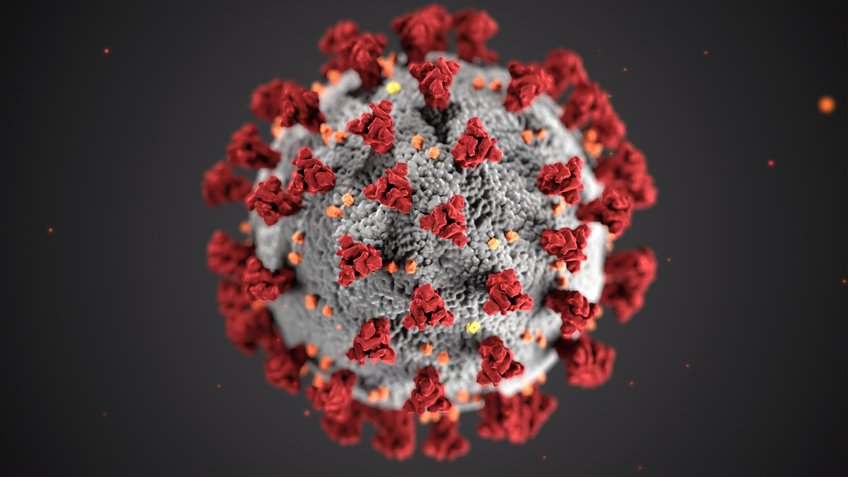

What Is COVID-19?
A coronavirus is a kind of common virus that causes an infection in your nose, sinuses, or upper throat. Most coronaviruses aren't dangerous. In early 2020, after a December 2019 outbreak in China, the World Health Organization identified SARS-CoV-2 as a new type of coronavirus.
The outbreak quickly spread around the world.
COVID-19 is a disease caused by SARS-CoV-2 that can trigger what doctors call a respiratory tract infection. It can affect your upper respiratory tract (sinuses, nose, and throat) or lower respiratory tract (windpipe and lungs). It spreads the same way other coronaviruses do, mainly through person-to-person contact. Infections range from mild to deadly.SARS-CoV-2 is one of seven types of coronavirus, including the ones that cause severe diseases like Middle East respiratory syndrome (MERS) and sudden acute respiratory syndrome (SARS). The other coronaviruses cause most of the colds that affect us during the
